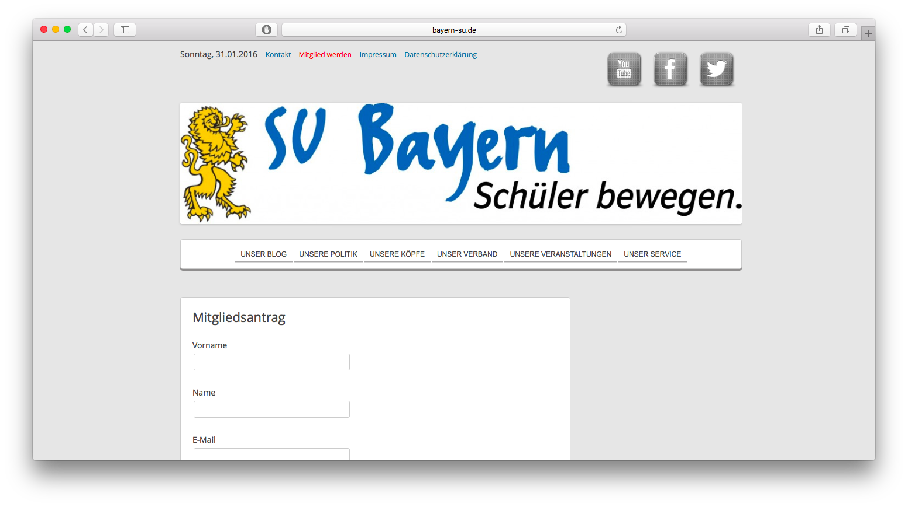
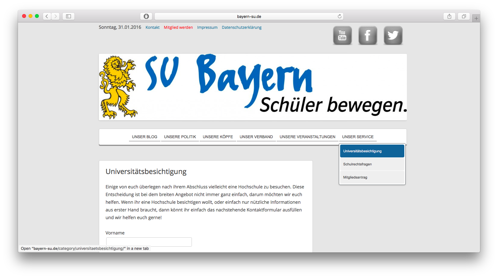
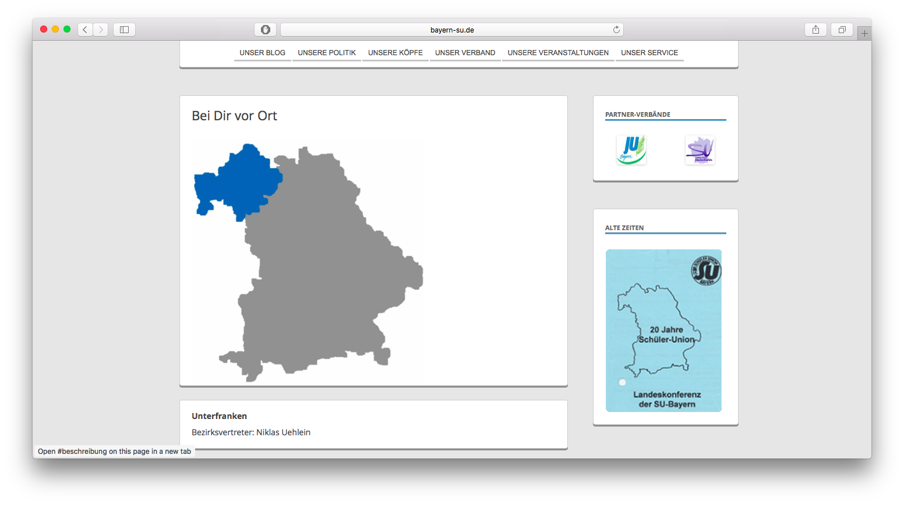
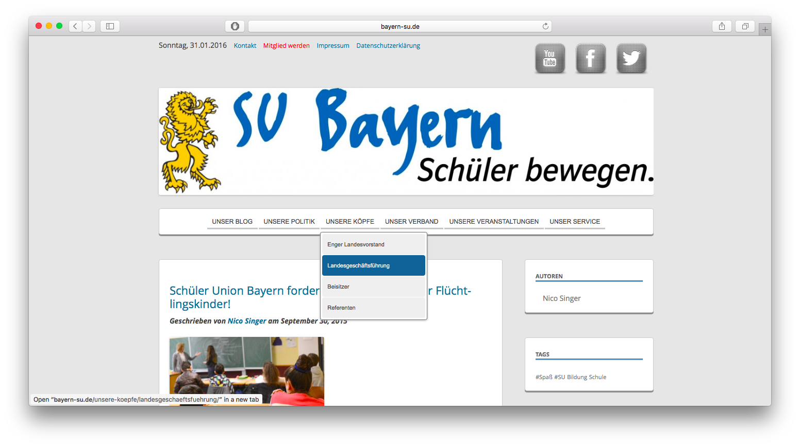

What: Wordpress site for a political youth organization of a german party (~ 1000 members)
Time frame: Several months in 2014
Cost: I am part of that orgnization, so I did it for free ;-)
Every member of the executive board with the right permission can post articles.
I used a simple wordpress plugin to do the member management.
Enable new members to sign up online
Pupils who want to join our organization can now apply online instead of mailing us a print out.



Included an RSS Feed of important government sites
Modern and professional design

Communication with a big democratic orgnaization is time consuming
The executive board of the youth organization only gets together around 8 times per year. Mayor changes (like a new way for people to become a member) need to be discussed with the entire group. Sometimes that was really frustrating.
Tip @freelancers
Take on projects only with one single responsible person who is also in charge of the budget!
A solid plan saves you a lot of time and trouble
That sounds abvious, but we forget about way too often. I had no idea which features I wanted to implement and when I wanted to be finished with the project. Hell yeah it was my first web project ever.
I would highly recommend sketch out all your features first on paper or with a simple tool like Sketch, get a buy in from all responsible parties and THEN start coding.
It took way longer than I thought
I have never done a web project before, but I thought it’s not real programming it’s just wordpress… Oh my god was I wrong. At the end I had to modify plugins which took years as I didn’t know php either.
Tip
Look at your schedule for the next weeks/months if you have enough time for your project!
Adverse circumstances made me procrastinate on the project
At some point I was not happy with the code implementation, so I refused to finish this particular feature and instead started another one. Then I was not pleased by visual appearance and switched to back to the other feature. At the end it was kind of mess and it took me way more energy to really finish a feature.
Tip
Get things done as quickly as possible and then just iterate!
Don’t start coding without a final agreement
This issue is related to my approach to start working without a real plan. I mean of course I made notes on a paper first, but that was by far not detailed enough. Finally I ended up developing a feature and then getting the feedback that nobody needs it or even worse we can’t use it for other reasons and I need to remove.
Tip
Use the startup approach and always get feedback before you actually start building a feature/product.
I didn’t use version control…
At that point I didn’t know that git exists and that it’s that easy. So I developed version v0.9 then v0.95 followed by v1.0, then v1.05, went back to v0.95 and continued with v2.0. It was a total mess…
Tip
Use version control early on. Check out my articles on how to learn git and my personal git workflow.
At the beginning I had no idea…now I am developing rails apps
I had worked for a german science institut on some microcontroller projects before I started working on this wordpress project. You can say I had NO IDEA what I was doing. You can learn a lot on the way. I just googled, stackoverflowed and youtubed a lot. At the end I had a pretty decent knowledge about wordpress.
Tip
Make bold moves and just try it even if you are not 100% certain if you can make it! Leave your comfort zone!
Creating stuff is way more fun than consuming
This goes especially to all my friends in Germnay. Creating stuff is so much fun in particular when other people give you feedback. It doesn’t matter if you build a company or just feed your facebook timeline with interesting content. As long as you get feedback - you will have fun.
Tip
As always, I would love to hear your feedback!
Shoot me an email: hello@janruettinger.co